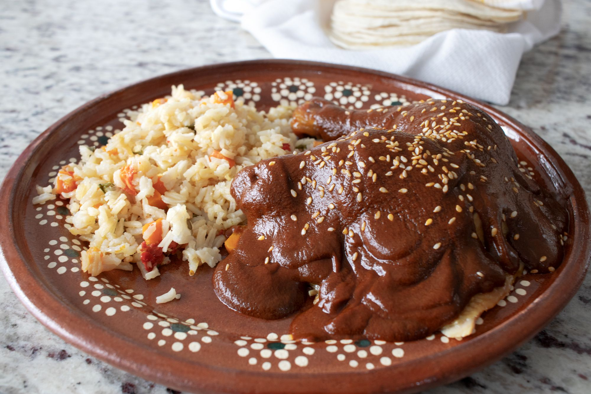
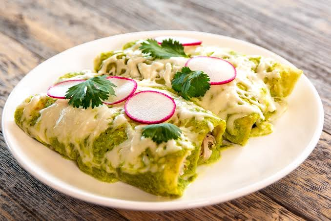
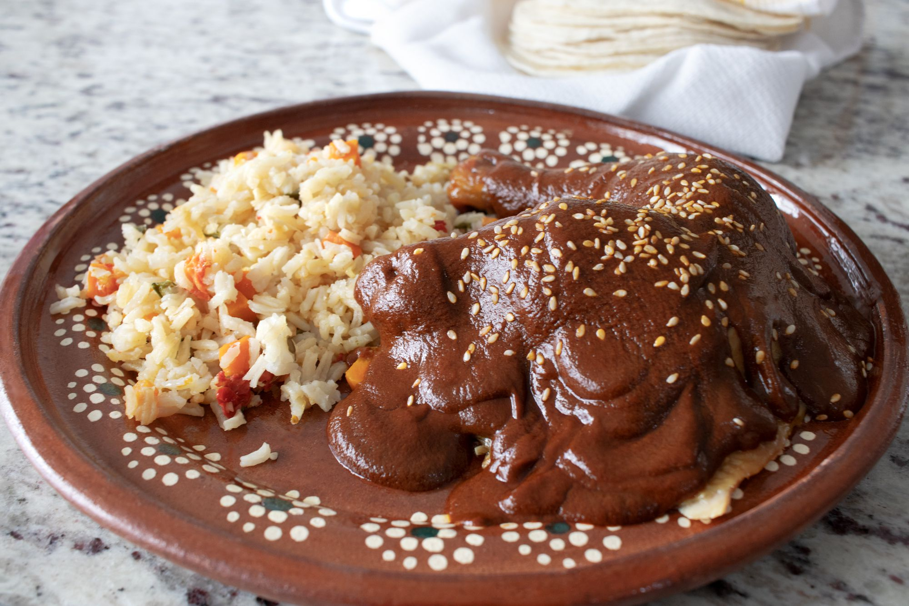
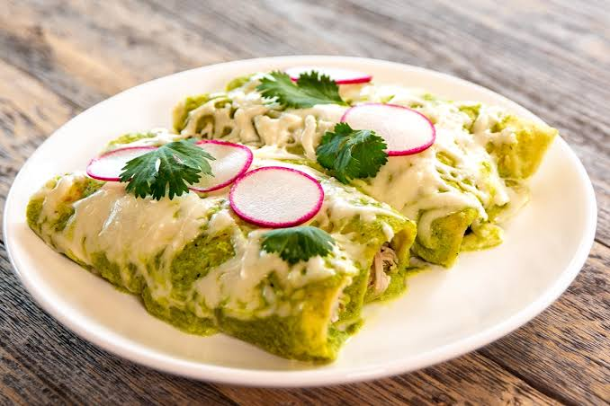

practica1.html
Autobiografia
Yosemite Itzel Martinez Domingues.
Holi
Esta es mi primera pagina en HTML, mi nombre es Yosemite Itzel Martinez Domingues y soy estudiante en el CETIS 47
(Centro de Estudios Tecnologicos Industrial y de Servicio 47.)
Mi tiempo como estudiante ah sido muy tranquilo, no eh hecho muchos amigos en mi salon ya que no soy muy buena socializando.
Mis pasatiempos favoritos son:
- Estar con mi familia
- Pasear en motocicleta
- Mirar series
- Aprender cosa nuevas
Mis redes sociales.
Mi Instagram
Mi facebook
Mi comida favorita.
En si, no tengo un solo alimento favorito pero si hay ciertos platillos que prepara mi mami y me gustan demaciado.
Como lo es el mole dulce, las enchiladas verdes, los chiles rellenos (de carne molida y queso)
son lo mejor del mundo, tambien el arroz blanco con verduras que cocina es super delicioso.
En fin no creo ser tan complicada con el tema de la comida ya que siempre como de todo.
 




Mis mejores amigos.
| Nombre |
Apellido |
Estado |
Edad |
| Braulio |
Hernandez |
Durango |
16 años |
| Hector |
Trujillo |
Guerrero |
21 años |
| Anthony |
Lopez |
Sonora |
17 años |
| Heyden |
Morocho |
Sinaloa |
19 años |
| Jose |
Hernandez |
Jalisco |
20 años |